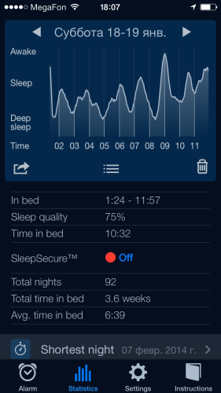

Нет разницы жаворонок ты, сова, или дятел, твой сон делится на две фазы — фазу быстрого сна, и фазу сна медленного.
Фаза медленного сна наступает сразу после засыпания. Считается, что именно во время этой фазы человек, во-первых, непосредственно отдыхает, а во-вторых запоминает полученную за день информацию.
Фаза быстрого сна более интересна. Во-первых, во время этой фазы мы видим сны. Проснувшись или будучи разбуженными в этой фазе мы можем восстановить сон по деталям. Во-вторых, в этой фазе происходит обработка информации, её упорядочивание. В зарубежной терминологии эту фазу называют *rapid eye movement*, то есть фазой быстрого движения глаз. Глазные яблоки спящего во время этой фазы непрерывно движутся. Тело же, напротив, остаётся в состоянии полного покоя. В честь этой фазы сна названа американская рок-группа R.E.M.
Всего таких циклов, включающих в себя чередующиеся фазы, за ночь, в обычной практике, случается пять.
Переходя к вопросу пробуждения можно утверждать, что просыпаться человеку комфортнее в конце цикла, в фазе быстрого сна. С обычным будильником проснуться в этой фазе можно только случайно. Если же проснуться в фазе глубокого сна, то в голове будет ощущение, что по ней немного ударили кувалдой. Вероятно, ты знаешь о чём я говорю. Правда, когда я учился в институте, у нас в общежитии были девушки, которые вычисляли эти свои циклы (сна) и ложились спать ровно с тем расчётом, чтобы в 7 часов утра была быстрая фаза. Учились «на отлично», кстати.
Но времена институтов и девушек давно прошли, пришли времена цукербергов и смартфонов.
Уже около полугода у меня на телефоне установлена программа Sleep Cycle. Это умный будильник, который следит за вашим сном и старается разбудить именно в фазе быстрого сна.
Айфон с установленной программой кладётся на кровать и с помощью встроенного акселерометра отслеживает ваши движения во сне. Получается на удивление точно.
Выглядит это так.
Устанавливается время «крайнего» пробуждения. В реальности умный будильник разбудит вас, если сочтёт нужным, в течение получаса (можно изменять в настройках) до установленного вами времени — 6:00 - 6:30, в данном случае.
Устройство будет работать всю ночь, значит его необходимо подключить к зарядному устройству. Ну, это в любом случае делает большинство.
Программа не только отслеживает фазы сна, но и ведёт статистику и строит графики.
Даже по выходным, когда просыпаться пораньше необязательно, я устанавливаю время с запасом, ради статистики. Просыпаюсь сам.
На следующем графике видно, что фаза быстрого сна началась аж в 5:30, и к 6:30 я уже начал проваливаться в глубокий сон. Так как время пробуждения был установлено на 6:30 - 7:00, будильник разбудил меня в 6:31. На график видно, что фаза быстрого сна уже начала заканчиваться, и в 7 часов я бы проснулся с разбитой головой и сердцем.
Умный будильник, на основании количества циклов и общей продолжительности сна рассчитывает показатель качества сна.
 Самая длинная (но не самая лучшая)
Кроме графиков есть ещё и общая статистика сна, которая тоже любопытна, хотя и закономерна.
Самые хорошие ночи — с субботы на воскресенье. Самые нехорошие с воскресенья на понедельник.
Спокойной ночи.